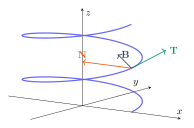

Bir gerçek parametreyi bir vektöre gönderen fonksiyon \(\mathbf r:I\to\mathbb R^3\) biçimindedir. \(\mathbf r(t)=(x(t),y(t),z(t))\) konum vektörünün ucu bir uzay eğrisi çizer. Parametre zaman olabilir; ancak her parametrizasyon fiziksel zaman değildir. Tanım kümesi, üç bileşenin tanım kümelerinin kesişimidir.
\(\mathbf F(t)=(t+1,\ln(1-t),\sqrt{4-t^2})\) için tanım kümesini bulunuz.
Adım adım çözümü göster
İlk bileşen tüm gerçek sayılarda tanımlıdır. Logaritma için \(1-t>0\), yani \(t<1\). Karekök için \(-2\le t\le2\).
Koşulları birlikte sağlamak gerekir: \(I=[-2,1)\). \(-2\) kabul edilir, çünkü kök sıfır olabilir; 1 kabul edilmez, çünkü logaritma argümanı sıfır olamaz.
Vektör fonksiyonlarında toplama, skalerle çarpma, skaler ve vektörel çarpım her t anında uygulanır. Skaler çarpımın çıktısı gerçek sayılı bir fonksiyon; vektörel çarpımın çıktısı yeniden vektör fonksiyonudur.
Bu eşdeğerlik sonlu boyutta normla yakınsamanın koordinat yakınsamasıyla aynı olmasından gelir. Süreklilik için fonksiyonun noktada tanımlı olması, limitin var olması ve limitin o noktadaki değere eşit olması gerekir. Tek bileşendeki bir sıçrama bütün vektör fonksiyonunu süreksiz yapar.
\(\mathbf F(t)=(|t|+1,t\lfloor t\rfloor,2+t^2)\) fonksiyonu 0 ve 1 noktalarında sürekli midir?
Adım adım çözümü göster
İlk ve üçüncü bileşen her yerde süreklidir. İkinci bileşen 0 yakınında solda \(-t\), sağda 0 olur; iki yandan limit 0, değer de 0. Dolayısıyla 0 noktasında süreklidir.
1 yakınında solda ikinci bileşen 0, sağda t olur. Limitler 0 ve 1 olduğundan 1 noktasında süreksizdir.
3.3
Eğriyi, izini ve yönünü ayırt etmek
Parametrik denklemlerden t yok edilerek eğrinin hangi yüzeylerin üzerinde bulunduğu anlaşılır. Ancak parametreyi yok etmek yönü ve kaç kez dolaşıldığını kaybettirir. Aynı geometrik iz farklı parametrizasyonlarla farklı hızlarda ve ters yönlerde taranabilir.
İlkinde \(x^2+y^2=a^2\), \(z=0\). \(a>0\) ve \(0\le t\le2\pi\) için pozitif z yönünden bakıldığında çember saat yönünün tersine bir tur taranır.
İkincide \(x^2+y^2=1\); yükseklik t ile artar. Bir turda t, \(2\pi\) artar ve yükseklik \(6\pi\) değişir. Bu eğri bir helistir.
Bir parametrizasyon sürekli, parçalı türevlenebilir olabilir. Düzgünlük için ilgili aralıkta türevin sürekli ve \(\mathbf r\,\prime(t)\ne\mathbf0\) olması istenir. Türevin sıfır olduğu bir parametrizasyon noktasında standart birim teğet formülü doğrudan uygulanmaz; eğrinin geometrisi ayrıca incelenir.
\(\mathbf r(t)=(a\cos t,a|\sin t|,0)\), \(-2\pi\le t\le2\pi\), \(a>0\) için düzgünlük nasıldır?
Adım adım çözümü göster
\(\sin t\) işaret değiştirdiğinde mutlak değerin türevi değişir. \(t=k\pi\) noktalarında tek taraflı teğet vektörler uyuşmaz; verilen parametrizasyon düzgün değildir.
Aradaki açık aralıklarda türev vardır ve normu a olur. Dolayısıyla sonlu sayıda parçaya ayrılarak parçalı düzgün kabul edilir. İz üst yarım çemberdir; birden fazla kez taranır.
3.4
Türev, teğet doğrusu ve çarpım kuralları
\(\Delta\mathbf r/\Delta t\), iki konum arasındaki kirişin zamana oranıdır. Limitte anlık değişim vektörüne dönüşür. \(\mathbf r\,\prime(t_0)\ne\mathbf0\) ise bu vektör eğrinin o noktadaki teğet yönüdür. Teğet doğrusu yeni bir parametreyle \(\mathbf q(s)=\mathbf r(t_0)+s\mathbf r\,\prime(t_0)\) olarak yazılır.
İlk bileşenin türevi \(4/\sqrt{1-16t^2}\); ikincinin türevi \(-6/[1+(2t-1)^2]\).
Üçüncü bileşen \(7(6t)/(3t^2)=14/t\). Türev formüllerinin ortak geçerlilik aralığı \(-1/4<t<1/4\), \(t\ne0\). Fonksiyon uçlarda tanımlı olsa da bu türevler uçlarda sonlu değildir.
\([\mathbf F(t)\times\mathbf F\prime(t)]\prime=\mathbf F(t)\times\mathbf F\prime\prime(t)\) olduğunu gösteriniz.
Adım adım çözümü göster
Çarpım kuralı sol tarafı \(\mathbf F\prime\times\mathbf F\prime+\mathbf F\times\mathbf F\prime\prime\) yapar.
Bir vektörün kendisiyle vektörel çarpımı sıfırdır. İlk terim silinince istenen özdeşlik kalır.
3.5
Vektör fonksiyonlarının integrali
İntegral de bileşen bileşen hesaplanır. Belirsiz integralde sabit bir vektör \(\mathbf C=(C_1,C_2,C_3)\) eklenir. Tek bir skaler sabiti bütün bileşenlere zorunlu olarak aynı eklemek genel çözümü daraltır. Başlangıç koşulu varsa üç sabit ayrı ayrı belirlenir.
\(\int_0^1(4t^3,3,2(t+1))dt\), \(\int_1^2(6-6t,3\sqrt t,4/t^2)dt\) ve \(\int_{-\pi/4}^{\pi/4}(\sin t,1+\cos t,\sec^2t)dt\) hesaplayınız.
Adım adım çözümü göster
İlkinde ilkel fonksiyon \((t^4,3t,t^2+2t)\). Sonuç \((1,3,3)\).
İkincide ilkel fonksiyon \((6t-3t^2,2t^{3/2},-4/t)\). Sonuç \((-3,4\sqrt2-2,2)\).
Üçüncüde sinüs tek fonksiyon olduğundan ilk bileşen 0. İkinci \(\pi/2+\sqrt2\), üçüncü \(\tan(\pi/4)-\tan(-\pi/4)=2\).
3.6
Yay uzunluğu ve yay parametresi
Küçük bir zaman aralığında alınan yol yaklaşık \(\|\mathbf r\prime(t)\|dt\) olur. Bu parçaları toplamak integrali verir. Normun integralini almak gerekir; integralin normu genellikle yer değiştirmedir ve yol uzunluğundan küçük olabilir. Eğri tekrar taranırsa integral tekrar gidilen yolu da sayar.
\(L=\int_0^{2\pi}13dt=26\pi\). Bu aralıkta \(s=13t\) olduğundan yay parametreli biçim \((5\cos(s/13),5\sin(s/13),12s/13)\), \(0\le s\le26\pi\).
3.7
Frenet çatısı: teğet, normal, binormal
Birim teğet \(\mathbf T\) hareket yönünü gösterir. \(\mathbf T\) yön değiştiriyorsa türevi teğete diktir; birimleştirilince asal normal \(\mathbf N\) elde edilir. \(\mathbf B=\mathbf T\times\mathbf N\) eğrinin anlık dönme düzlemine diktir. Bu üçlü sağ elli ortonormal bir çatıdır.
\(\mathbf r(t)=(e^t,e^{-t},\sqrt2\,t)\) için \(t=0\) anındaki çatıyı bulunuz.
Adım adım çözümü göster
\(\mathbf v(0)=(1,-1,\sqrt2)\), normu 2; \(\mathbf a(0)=(1,1,0)\). Dolayısıyla \(\mathbf T(0)=(1,-1,\sqrt2)/2\).
\(\mathbf v(0)\cdot\mathbf a(0)=0\), süratin türevi o anda 0. \(\mathbf T\prime(0)=\mathbf a(0)/2\); normu \(1/\sqrt2\). Böylece \(\mathbf N(0)=(1,1,0)/\sqrt2\).
\(\mathbf B(0)=(-1/2,1/2,1/\sqrt2)\). Üç vektörün normları 1 ve ikili skaler çarpımları sıfırdır.

Uzay eğrisi üzerinde T teğet, N merkeze dönme yönü, B ise ikisine dik yönü gösterir.
3.8
Eğrilik ve eğrilik yarıçapı
Eğrilik, birim uzunluk başına teğet yönünün ne kadar değiştiğidir. Parametre daha hızlı ilerlediği için teğet daha hızlı değişebilir; bunu fiziksel hızdan ayırmak için \(d\mathbf T/dt\), \(ds/dt\) ile bölünür. Bir çemberde eğrilik yarıçapın tersidir.
Düzlemde \(y=f(x)\) grafiği için \(\mathbf r(x)=(x,f(x),0)\) seçilirse \(\kappa=|f\prime\prime(x)|/[1+(f\prime(x))^2]^{3/2}\). Mutlak değer eğriliğin negatif olmamasını sağlar. Birim yay uzunluğuyla parametrelendirilmiş eğride \(\|d\mathbf r/ds\|=1\) ve \(\kappa=\|d^2\mathbf r/ds^2\|\).
3.15Pekiştirme
Genel helisin eğriliği
\(\mathbf r(t)=(a\cos t,a\sin t,bt)\), \(a>0\), için eğrilik nedir?
\(\kappa=a/(a^2+b^2)\), \(\rho=(a^2+b^2)/a\). \(b=0\) olursa çember sonucu \(1/a\) elde edilir.
Ek bilgi: eğrinin uzayda dönme düzleminin değişimini burulma ölçer. Yeterince türevlenebilir ve \(\mathbf r\prime\times\mathbf r\prime\prime\ne0\) iken \(\tau=[(\mathbf r\prime\times\mathbf r\prime\prime)\cdot\mathbf r\prime\prime\prime]/\|\mathbf r\prime\times\mathbf r\prime\prime\|^2\). Bu müfredatta temel hedef eğriliktir; burulma tamamlayıcıdır.
3.9
Hız vektörü, sürat ve ivme
Hız \(\mathbf v=\mathbf r\prime\) vektördür; sürat \(v=\|\mathbf v\|\) sayıdır. İvme \(\mathbf a=\mathbf v\prime\), hem süratin hem yönün değişmesini içerir. Sabit sürat sıfır ivme demek değildir: çembersel harekette yön değişir. \(\mathbf v\cdot\mathbf a=\tfrac12(v^2)\prime\) olduğundan hız ve ivmenin dikliği o anda süratin türevinin sıfır olmasıyla ilişkilidir.
\(\mathbf r(t)=(t^2-4,t^3-4t,0)\), \(-2\le t\le2\). Basit ve kapalı mıdır?
Adım adım çözümü göster
Her iki uç (0,0,0) olur. Farklı t ve s için eşit ilk koordinatlar s=-t gerektirir; ikinci koordinat eşitliği \(2t(t^2-4)=0\) verir.
Farklı parametrelerle tek tekrar uçlarda t=2 ve s=-2 dir; t=0 kendi kendine aynı parametredir. Dolayısıyla basit kapalı eğridir.
\(\mathbf r\prime=(-4,8,0)\) ve (4,8,0) uçlarda paralel değildir; kapama noktasında köşe vardır. Verilen parametrizasyon parçalı düzgün kapalı eğri olarak ele alınır.
Alternatif \(\mathbf U\prime\times\mathbf V+\mathbf U\times\mathbf V\prime\) aynı sonucu verir. Orta bileşenin t altıncı kuvvetinin türevi \(6t^5/8=3t^5/4\); defterdeki bu satır sadeleştirilerek kontrol edildi.
Genel gerekçe: \(\mathbf r\cdot\mathbf r=a^2\) sabit olduğundan türevi \(2\mathbf r\cdot\mathbf r\prime=0\).
3.11
İvmenin teğetsel ve normal bileşenleri
\(\mathbf v=v\mathbf T\) ifadesinin türevi alınırsa ivmenin bir kısmı sürati, diğer kısmı yönü değiştirir. Normal bileşen, eğriliğin ve süratin karesinin çarpımıdır. Teğetsel katsayı negatif olabilir; normal katsayı negatif değildir.